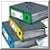

 ReportsHier besteht die Möglichkeit Dokumente in einem Adobe Acrobat Reader PlugIn zu betrachten von dort als PDF zu speichern oder es zu drucken. Bei den Dokumenten werden 3 Grundtypen unterschieden. MeldevordruckeAls Meldevordrucke stehen die folgenden Dokumente zur Verfügung:
Meldevordrucke. EinsatzdokumenteEs können Dokumente mit Informationen zum aktuellen Einsatz ausgewählt werden. Folgende Einsatzdokumente stehen dafür zur Verfügung:
Vorblatt Einsatzbericht. Aufträge - Meldungen - LeihübergabenIm System erfasste Aufträge, Meldungen oder Materialübergaben können einzeln ausgedruckt werden. Dazu wird in der linken ComboBox der entsprechende Typ gewählt. Es erscheint eine neue ComboBox, die je nach gewähltem Typ alle im System vorhandenen Aufträge, Termine und Leihübergaben anzeigt. Erkundungsergbnis Zurück project.ELS version 1.0 |